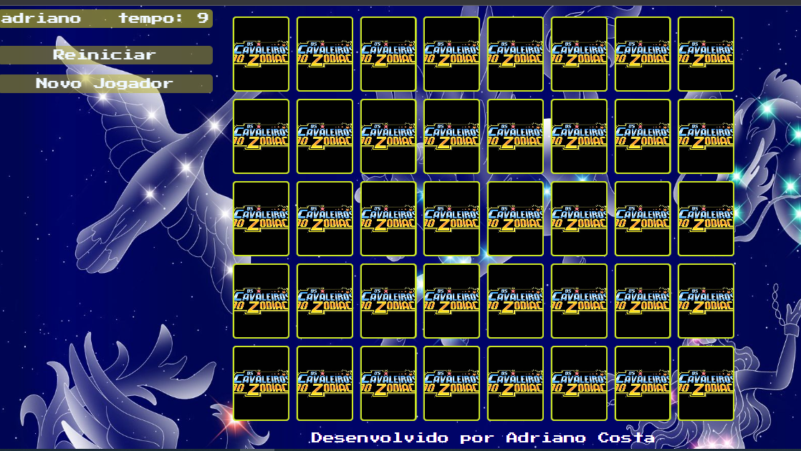

Apresento a seguir uma seleção dos meus projetos pessoais, que abrangem
tanto o desenvolvimento de backend quanto de frontend. Estes projetos
foram desenvolvidos ao longo dos meus cursos e atividades de
aprendizagem, demonstrando minha habilidade e paixão pelo
desenvolvimento de software. Explore-os abaixo e fique à vontade para
acessar o código-fonte no GitHub para saber mais detalhes.
são os projetos em destaque
Bem-vindo ao meu universo digital, onde a criatividade encontra a
tecnologia! Meu portfólio é mais do que uma simples coleção de
projetos; é um testemunho da minha paixão por codificação e design. O
que torna este portfólio especial não são apenas os projetos
individuais, mas o processo meticuloso de reunir uma variedade de
trabalhos pessoais e de aulas em um só lugar, usando minhas
habilidades em HTML, CSS e JavaScript.
Destaques do Portfólio:
Diversidade Criativa: Explore uma gama eclética
de projetos que vão desde websites interativos até aplicações web
dinâmicas. Cada projeto é um mergulho profundo em minha
criatividade e habilidades técnicas, mostrando minha capacidade de
adaptar ideias inovadoras em código funcional.
Reaproveitamento Inteligente: Reconheço a
importância da eficiência no desenvolvimento web. Portanto, criei
templates robustos e modulares usando HTML, CSS e JavaScript.
Esses templates não apenas garantem consistência em todo o meu
portfólio, mas também servem como blocos de construção para
futuros projetos.
Design Responsivo e Acessível:: Priorizei a
acessibilidade e a responsividade em todos os projetos. Cada
página é projetada para oferecer uma experiência perfeita,
independentemente do dispositivo ou tamanho de tela, garantindo
que meu trabalho seja acessível a todos.
Minha Abordagem: Ao criar este portfólio,
mergulhei na arte de transformar ideias em código tangível. Cada
linha de código reflete meu compromisso com a excelência e minha
paixão pela inovação. Por trás de cada projeto há não apenas
habilidade técnica, mas também uma narrativa visual que conta uma
história única. Estou entusiasmado para compartilhar meu trabalho
e estou sempre buscando desafios inspiradores para me envolver. Se
você está procurando um desenvolvedor web criativo e dedicado,
estou pronto para transformar sua visão em realidade. Explore meu
portfólio e descubra o mundo fascinante onde o design encontra a
tecnologia. Obrigado por visitar!
Ferramentas trabalhadas
Jogo da memoria cavaleiros
do zodiaco
O "Jogo da Memória dos Cavaleiros do Zodíaco" é um projeto de
desenvolvimento web que combina elementos de HTML, CSS e JavaScript
para criar uma experiência interativa baseada na popular série de
anime "Cavaleiros do Zodíaco". O jogo desafia os jogadores a testarem
sua memória, combinando pares de cartas com imagens dos personagens e
símbolos icônicos da série.
Recursos Principais:
Tabuleiro de Cartas: O jogo apresenta um
tabuleiro de cartas viradas para baixo, onde os jogadores podem
clicar para revelar as imagens ocultas.
Cartas Personalizadas: As cartas são
personalizadas com imagens de Cavaleiros do Zodíaco, tornando o
jogo mais envolvente para os fãs da série.
Lógica do Jogo: O jogo é construído com lógica
JavaScript que permite que os jogadores escolham duas cartas para
tentar encontrar pares correspondentes. Se as cartas forem
correspondentes, elas permanecem viradas para cima; caso
contrário, elas são viradas novamente para baixo.
Pagina inicial do jogo

Pagina do jogoEfeito das cartas sendo viradas
Ferramentas trabalhadas
Quizz
Conforme o professor Matheus Batistti nos incentivou a alterar e
aumentar o projeto do Quizz com HTML,CSS e JS, Fiz uma tema de seleção
de temas aonde gera 10 perguntas aleatórias sobre o tema escolhido e
calcula a pontuação das resposta certas e erradas podendo reiniciar
após o termino da rodada.
Recursos Principais:
Manipulação de arrays: O jogo apresenta um
conjunto de arrays de cada tema com certa de 100 perguntas aonde
manipulo esses arrays para que cada jogo tenha apenas 10
perguntas, também o jogo coloca as alternativas das perguntas de
forma aleatórias.
Manipulação do DOM: O jogo possui varios
elementos de Manipulação do DOM, ocultando temas, chamando novas
temas com as perguntas.